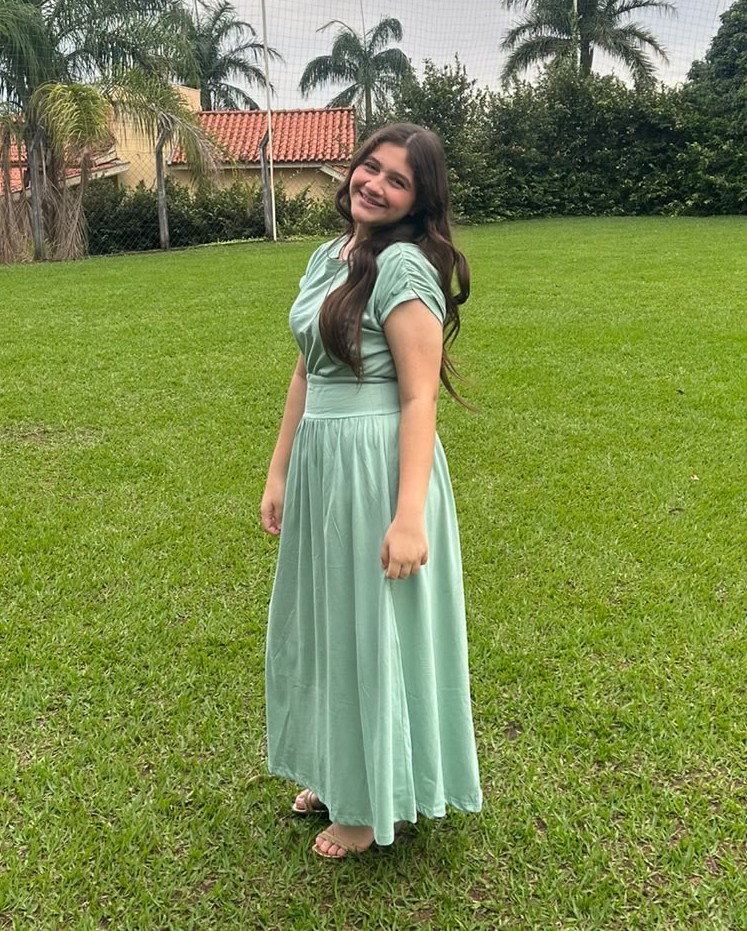

Hadassa
Programadora
Meu nome é Hadassa, tenho 13 anos e sou programadora da equipe Mbotics. Entrei para a robótica em um momento inesperado e, com o tempo, fui descobrindo e gostando cada vez mais de tecnologia e programação. Como programadora, participo do desenvolvimento dos projetos e também criei um site para a equipe. Gosto de trabalhar em conjunto, trocar ideias e planejar tudo antes de colocar em prática.